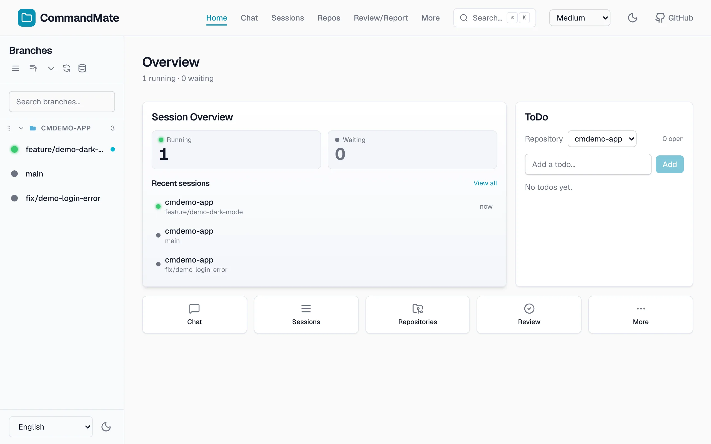
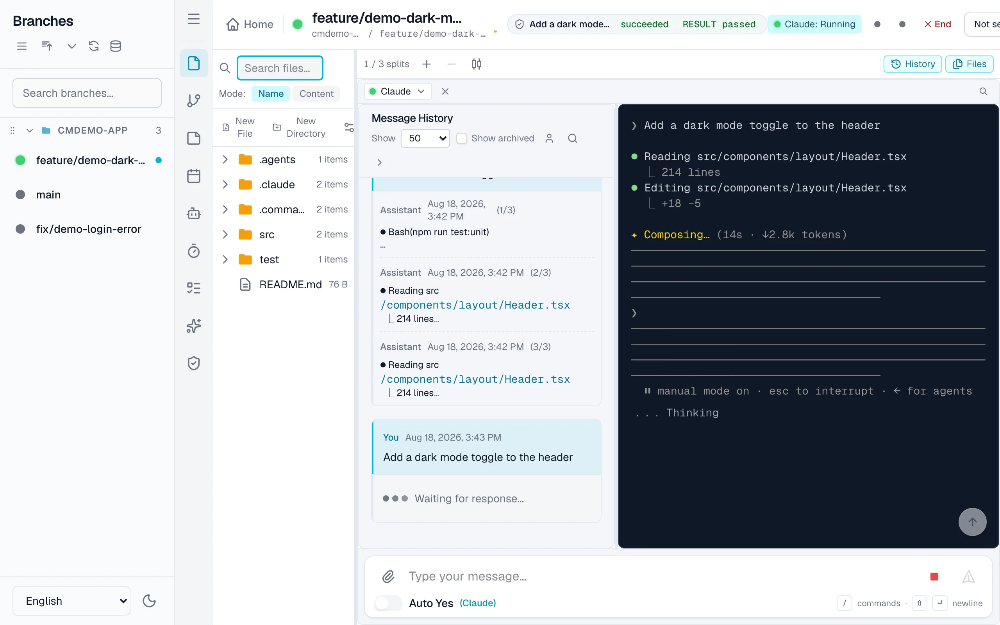
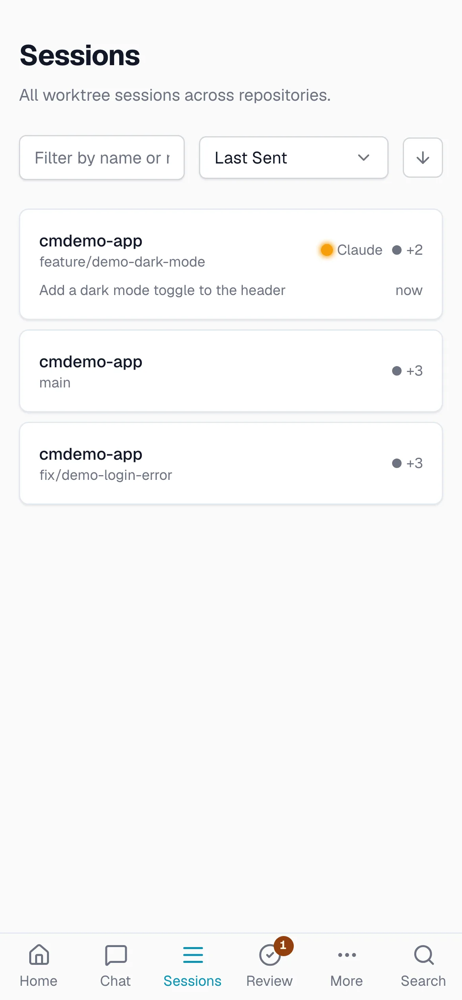
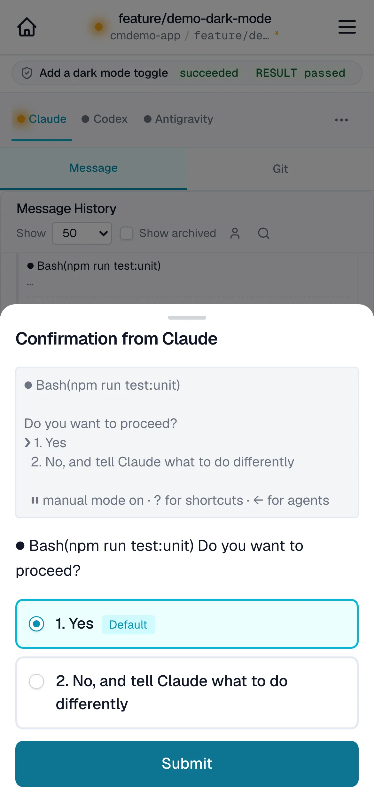
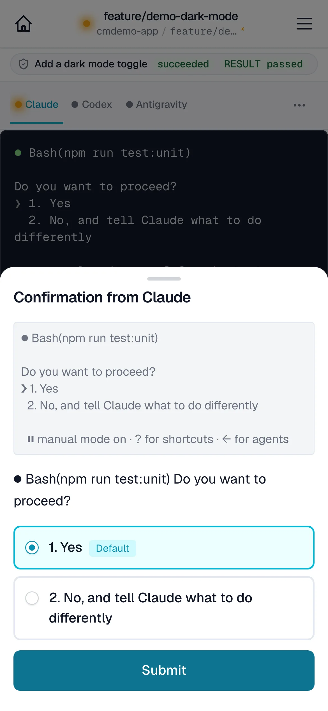

Parallel issue development
One session per Git worktree, running in parallel. Multiple issues progress simultaneously without interfering with each other.
Status: Beta
CommandMate is a local control plane for agent CLIs.
npx commandmate@latest
From install to your first session in 60 seconds.
macOS / Linux / Windows (WSL2) · Node.js v22+ · npm · git · tmux

One session per Git worktree, running in parallel. Multiple issues progress simultaneously without interfering with each other.
Full session control from any browser. Monitor and steer from your desk or your phone — review changes, answer prompts, send a screenshot with "fix this".
Choose Claude Code, Codex, Gemini, or local models per issue. CommandMate adds orchestration on top of the CLIs you already use — it does not replace them.
Runs 100% locally. No external server, no cloud relay, no account required — the only network traffic is the agent CLI's own API calls.
Two ways in. Take Track A to see it working, Track B once you keep coming back.
Track A
One command, nothing installed first. There is nothing else to type — it runs all four steps below for you.
npx commandmate@latest
Node.js, npm, git and tmux. Stops with an install hint if one is missing.
Repository root, port, external access, database path.
Then waits until it actually answers.
At http://localhost:3000, once the server is ready.
Step 2 is first-run only. Run it again later and it goes straight to the UI.
Track B
Track A runs the server out of npm's cache, where a later npx can swap the
files under it. A global install gives a long-running server somewhere stable to live.
npm install -g commandmate
First run only, and skipped entirely if you already have a .env.
commandmate init
Keeps serving after you close the terminal.
commandmate start --daemon
Either track leaves a server running in the background. commandmate status
tells you whether one is up, and commandmate stop shuts it down.
A small repo with two failing tests left in on purpose. Hand it to an agent and you will have used the whole loop — a session, a proxied dev server, and two worktrees running side by side — in about ten minutes.
https://github.com/Kewton/commandmate-tutorial.git
Paste it into Repositories → Add Repository → Clone URL, then follow the four-step tutorial. No install, no dependencies.
The same control plane in your browser, whichever screen you are on.




| Feature | CommandMate | Remote Control (Official) | Happy Coder | claude-squad | Omnara |
|---|---|---|---|---|---|
| Auto Yes Mode | Yes | No | No | Yes (TUI only) | No |
| Git Worktree Management | Yes | No | No | Yes (TUI only) | No |
| Parallel Sessions | Yes | No (1 only) | Yes | Yes | No |
| Mobile Web UI | Yes | Yes (claude.ai) | Yes | No | Yes |
| File Viewer | Yes | No | No | No | No |
| Markdown Editor | Yes | No | No | No | No |
| Screenshot Instructions | Yes | No | No | Not possible | No |
| Scheduled Execution | Yes | No | No | No | No |
| Survives Laptop Close | Yes (daemon) | No (terminal must stay open) | Yes | Yes | Yes |
| Token Authentication | Yes | N/A (Anthropic account) | N/A (app) | No | N/A (cloud) |
| Free / OSS | Yes | Requires Pro/Max | Free + Paid | Yes | $20/mo |
| Runs 100% Locally | Yes | Via Anthropic API | Server-routed | Yes | Cloud fallback |
npx commandmate@latest